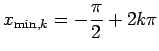
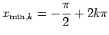

Inhalt Index DeskTop Bronstein

 Funktionen und ihre Darstellung Trigonometrische Funktionen (Winkelfunktionen) Grundlagen Definition und Darstellung
Funktionen und ihre Darstellung Trigonometrische Funktionen (Winkelfunktionen) Grundlagen Definition und Darstellung


Die gewöhnliche Sinusfunktion
| (2.63a) |
ist in der folgenden Abbildung dargestellt.
Es ist eine stetige, periodische Kurve mit der Periode  .
.
Die Schnittpunkte mit der gewöhnlichen Sinuskurve mit der x-Achse sind zugleich die Wendepunkte der Kurve. Der Neigungswinkel der Kurventangente gegenüber der x-Achse beträgt hier .
Die Maxima liegen bei 
 , die Minima bei 
, die Minima bei   .
.
Für jeden Funktionswert y gilt
Die allgemeine Sinusfunktion
| (2.63b) |
mit der Amplitude |A|, der Frequenz  und der Anfangsphase
und der Anfangsphase  ist in der folgenden Abbildung dargestellt.
ist in der folgenden Abbildung dargestellt.
Gegenüber der gewöhnlichen Sinuskurve mit und ist die allgemeine Sinuskurve in y-Richtung um den Faktor |A| gedehnt, in x-Richtung um den Faktor zusammengedrückt und um die Strecke nach links verschoben. Die Periode ist
Die Schnittpunkte mit der x-Achse liegen bei , die Maxima bei und die Minima bei Für jeden Funktionswert y gilt: